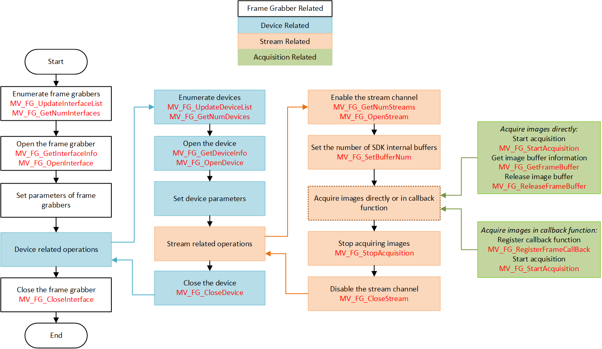

This chapter mainly introduces the API calling flow of image acquisition. In the figure below, APIs in the white area are related to frame grabbers, APIs in the blue area are related to cameras, APIs in orange area are related to stream operations, and APIs in the green area are related to acquisition mode.

The process can be divided into 5 modules:
Frame Grabber Module
-
Enumerate the frame grabbers on the computer, and select one of them. Get frame grabber information with MV_FG_GetInterfaceInfo() . Then enable the frame grabber and get its handle.
-
(Optional) With the frame grabber handle, use MV_FG_FeatureLoad() to import the properties file with the suffix .hcf, so as to load the parameters of the frame grabber. You can also call the parameter control function to realize parameter control of the frame grabber.
-
After the whole image acquisition process ends, you need to disable the frame grabber to release frame grabber resources.
Camera Module
-
Before using the camera module, you need to first enumerate the frame grabber and create frame grabber handle.
-
Enumerate the cameras and select one of them. Get the camera information with MV_FG_GetDeviceInfo() . Then open the camera and get its handle.
-
(Optional) With the camera handle, use MV_FG_FeatureLoad() to import the properties file with the suffix .hcf, so as to load the parameters of the camera. You can also call the parameter control function to realize parameter control of the camera.
-
After the image acquisition process ends or the camera operation ends, you need to close the camera to release camera resources.
Stream Module
-
You need to first get the number of stream channels after opening the camera and before acquiring images. Then open the stream channel with its index. By default, a camera only has one stream channel.
-
After the image acquisition process ends, you need to disable the stream channel to release stream resources.
Image Acquisition Module
-
Set the number of SDK internal buffers by calling MV_FG_SetBufferNum() .
-
Two methods of image acquisition are provided: acquire images directly or acquire images in the callback function.
• Acquire images directly: Call MV_FG_StartAcquisition() to start streaming. Then call MV_FG_GetFrameBuffer() to get the image buffer information. After that, call MV_FG_ReleaseFrameBuffer() to release the image buffer.
• Acquire images in callback function: Register a callback function for receiving frame buffer information with MV_FG_RegisterFrameCallBack() . Then call MV_FG_StartAcquisition() to start streaming.
Note:
a. The above two methods of image acquisition cannot be used at the same time.
b. In callback functions, time-consuming operations and thread locks are not recommended, which may cause blocking.
c. The image data in the image buffer structure is a buffer pointer, it is recommended to copy the data of callback function and use it in another thread.
-
Call MV_FG_StopAcquisition() to stop image acquisition.
Image Processing Module
-
Start image acquisition. You can get the data memory address with the API of getting images.
-
Start image processing, including displaying a frame of image, saving BMP/JPEG/TIFF/PNG images, converting pixel formats, lossless decoding, JPEG decoding, and reconstructing images.